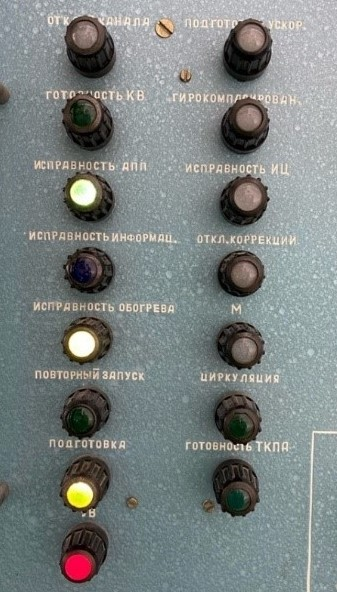

| № | Действия | Графическое изображение | Инструменты/средства | Технические требования |
| 7 | Отключите изделие тумблер SA4 ВКЛ ОБОГРЕВА панели «Измерение» ТКПА устанавливают в положение ВЫКЛ. Нажимают кнопку SB3 ВЫКЛ.КВ панели «Управление» ТКПА. | - | Установка для проверки изделия 705-6. | - |
| 8 | Блок БУ-36 с.2, подключенный жгутами к установке, поместите в камеру тепла и холода. | - | Камера тепла и холода; Установка для проверки изделия 705-6; Жгут для проверки блока БУ-36 с.2. |
- |
| 9 | Температуру в камере тепла повысьте до +80°С. После достижения установившегося теплового режима блок в рабочем состоянии выдержите при этой температуре в течение 2 ч. | - | Камера тепла и холода; 6Д2.222.091 ТУ. |
Технические требования соответствуют пункту 1.18 действующих ТУ. |
| 3 | Тумблер SA4 ВКЛ ОБОГРЕВА панели «Измерение» ТКПА устанавливают в положение ВКЛ. Нажимают кнопку SB2 ВКЛ.КВ панели «Управление» ТКПА и одновременно включают секундомер. |  Рисунок 1 | Антистатический браслет (1Мом±20%) или перчатки; Установка для проверки изделия 705-6. |
Должны засветиться транспаранты ИСПРАВНОСТЬ АПП и УВ (смотри рисунок 1). |
| 4 | Дождитесь, когда через (15±3) с. погаснет транспарант УВ. А не более чем через 3 мин засветиться транспарант ГОТОВНОСТЬ КВ. | - | Установка для проверки изделия 705-6 | - |
По результатам проверки нажмите на соответствующую кнопку
Временные рамки соответствуют требованиям Временные рамки НЕ соответствуют требованиям